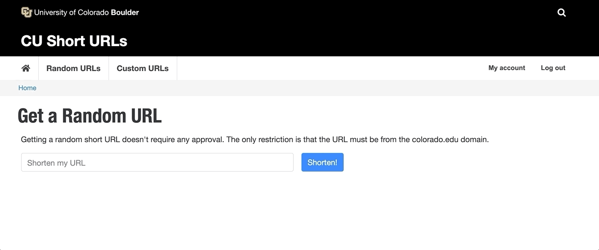

CU Short URLs
A new service provided by SRC Web Team
This service allows users to create short urls that match the university brand. We've created a new D9 site to interface with YOURLs, an open source link shortener.
We can go from a url like https://www.colorado.edu/academics/programs/technology-arts-media ,
to something like https://sho.rt/tam
Feature Overview
- New Roles
- Generate random URLs like https://sho.rt/f56j from any colorado domain
- Applications for shortening non colorado domains or creating custom paths
- Block to show a list of existing short links
- Automatic update emails sent to applicants
Roles
New users will receive the Web Service Contributor role. This allows them to generate random URLs and apply for custom ones
The Web Service Admin role allows them to view stats about existing short URLs and manage applications
If users are abusing the service, admins can remove the Web Service Contributor role, restricting their access
Configuration
Web Service Admins can easily connect Drupal to YOURLs
Let's generate a random URL
Now let's Apply for a Custom URL
Users will fill out this form with a few details about the URL they want to shorten
Ex) A user could ask to shorten:
https://cubuffs.com/sports/2017/7/28/ticket-information-request-form.aspx
to
/tickets
Managing URL Applications
Once a user has requested a short URL, an admin will either Approve or Reject it. Emails are automatically sent to applicants notifying them of their status.

Time to visit the new link

Thank you!
Visit the CU Short URLs dev site
Next Steps
We need to pick a domain to use for the link shortener. Here are some current ideas, and we encourage your thoughts and ideas!
- buff.click
- be.cu
- boulder.cu
- col.ora.do
- boulder.is
- boulder.link
- ucb.page
- boulder.sh
- ucb.site
- boulder.st